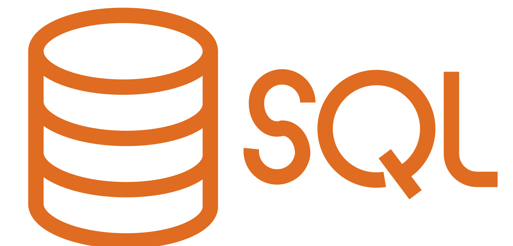

Étudiant et ancien lycéen en Terminale générale avec comme spécialités NSI et Mathématiques, je suis attiré par l'informatique et surtout la programmation. J'ai réalisé des projets dans divers langages. Je souhaite me diriger vers des études d'informatique. Enfin, je suis très motivé et prêt à m'investir pour mes études supérieures.
Accéder à mon CV docs

Analyser les spams utilisateur, leur mettre des avertissements (et les enregistrer dans une BDD), faire des opérations simples, répondre à des commandes... Il peut en faire des choses mon bot !
(Projet de NSI en Terminale) Du 7 contre 7, choisissez les 7 joueurs de votre équipe parmi une cinquantaine, et hop, prenez vos pop-corns et regardez le match !
Il n'est pas parfait, c'est vrai. Pas très joli, peut-être un peu vide... Mais il fait le job (Et n'oublions pas que je débute ! J'ai plein d'ambitions, mais patience...) !
Choisissez parmi plusieurs options : présence de caractères spéciaux, majuscules, et même la taille du mot de passe ; hop, un mot de passe directement copié dans votre presse-papier est utilisable !